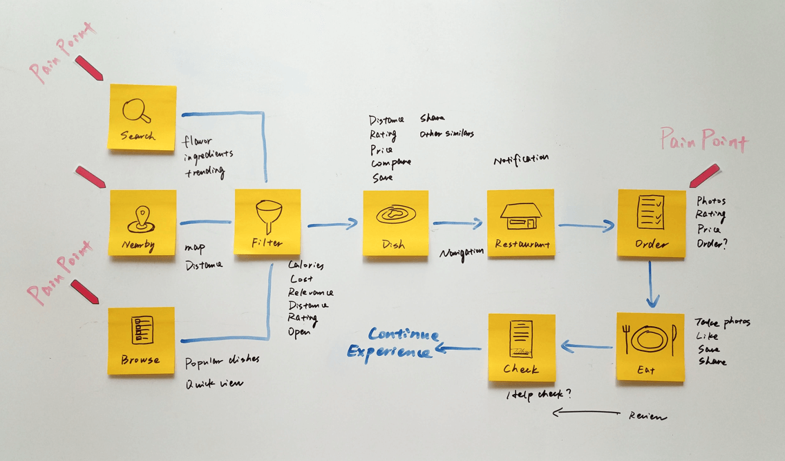

Taste is a self-initiated project started from October to December 2015. We were a team of three designers, Steven Zhao, Jack Li and me, tried to design a better experience for finding nice food and friends.
I actively participated in every design stage and made interactive prototypes with Pixate and final visual design independently.
THE PROBLEM
"So, what are we going to eat?"
This is probably the most common question we asked ourselves every day.
Most people are using apps such as Yelp, Foursquare or Google Map to discover restaurants and foods. Sometimes they work well, providing valuable tips, reviews and photos to help people find their favorites.
However, why do we still have the same problem: WHAT TO EAT?
USER INTERVIEWS
More details of dishes, more personalized recommendations
As an international student, I usually find myself having a hard time to understand the restaurants’ menu. What if they could just show me what the dishes look like! This is where our initial idea of Taste comes from.
But is this a common need that not only for international students but also for native residents? After conducted several semi-structured interviews, we believed the answer is YES.
Some questions we asked during the interviews.
1. What tools do you use for finding local food?
2. Have you ever used Yelp or anything similar?
3. If yes, could you please show us how do you use it? If no, could you tell me why you are not using?
4. What is the most important information when you are looking for a restaurant?
5. Do you ask your friends for recommendations?
6. …
"The restaurant’s rating is important, but I care mostly about the flavor of the food."
"Sometimes I just run across restaurants with my friends. But it would be better if we could see the dish pictures."
"Every time when I am choosing a restaurant, I have to go to the restaurant page and look for food photos."
"The most frustrating thing is that when I arrived at the restaurant only to find that the dish I was looking for was no longer offered."
To those who use Yelp, we asked them to show how do they use Yelp and how do they feel about it.


key finding
1. Seeing the actual dish
Making dining decisions is not easy without seeing what dishes a restaurant is actually offering. Food photos on Yelp may be seasonal or discontinued. Besides, there was not a clear way to search for a particular dish nor a comprehensive catalogue for foods.
2. People's needs are varied
Everyone has their own preferences, their own ways to find and evaluate food. Sometimes it varies depending on time, location, people dining with, etc.
3. They tend to trust friend's recommendation
People trust their friend’s recommendation, or at least are more willing to try, especially those with the similar taste.
Design Insights
1. Dish centered
Focusing on dishes, providing more details, especially the dish pictrues, to help users make decisions.
2. Personalized recommendation
Based on time, location, user’s eating habit and history, etc, provide personalized dish recommendations.
3. Connect people
Connect people who have similar taste, encourage them sharing delight experience with each other, make this app a friendly community for food lovers!
COMPETITOR ANALYSIS
Differentiate our app from competitors
Rather than finding the restaurant first, what we provide was a direct entrance for exploring foods. We are not making another Yelp or Foursquare, we tried to differentiate our app by focusing on food directly, building strong connections between people and food, and people who share the same taste.
USER JOURNEY MAP
Mapping out essential features
We created a user journey map to help us identify all specific locations of the pain points, and map out all essential features and prioritized them.
IDEATION AND ITERATION
Move fast, keep simple, iterate with prototypings
We did brainstorming several times, met every other day and iterated our ideas and sketches. We got many ideas and killed most of them to keep our design as simple as possible.
Some early design iterations

Early interactive prototypes made by Pixate
Using these prototypes, we did several user tests to quickly verify our designs, and here are the things we found.
• Some users did not understand the difference between dish tab and restaurant tab.
• Browsing dishes is not very efficient, it would be better to add more recommendations on home tab.
• Need a way to quickly search certain kind of food.
• Recommendation should be different based on user's browsing history, time, location, etc.
• ...
Based on the feedbacks, we found that as the project going, we kind of lost our focus, tried to design for too many scenarios which instead caused ambiguous for users. So we reviewed our design, took off some features and kept focusing on food, recommendation and socialization.
VISUAL DESIGN
Energetic, Delightful and Connected
First, we decided our color scheme, use red (#DF5A49) as the main color. Because red gives the feeling of energetic and delightful, encourages people to enjoy food.